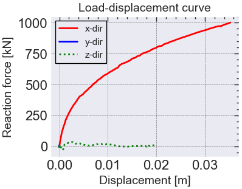

Code
import os, time, sys, math, random, json, requests, csv, subprocess
import pandas as pd
import numpy as np
import seaborn as sns
import matplotlib.pyplot as plt
import scienceplots
import multiprocessing as mp
from scipy import stats
from plotnine import *
from plotnine.data import diamonds
from IPython.display import display
import xlsxwriter
import xmltodict
from plxscripting.easy import*
import plxscripting.easy
from collections import defaultdict
from collections import Mapping
from bs4 import BeautifulSoup
from lxml import objectify
###########################################################################
# data to plot
df = pd.read_csv(r'C:\Users\Admin\Desktop\pytools\kyeongsunkim.github.io\saved\saved.csv')
x = df["Ux"].to_numpy()
y = df["Fx"].to_numpy()
x2 = df["Uy"].to_numpy()
y2 = df["Fy"].to_numpy()
x3 = df["Uz"].to_numpy()
y3 = df["Fz"].to_numpy()
###########################################################################
# figure
plt.rc('font', family='serif')
plt.rc('xtick', labelsize='x-small')
plt.rc('ytick', labelsize='x-small')
plt.style.use(['science', 'notebook', 'grid'])
fig = plt.figure(figsize=(4, 3))
###########################################################################
# plot [1]
ax = fig.add_subplot(1, 1, 1)
#ax.plot(x, y, color='k', ls='solid')
#ax.plot(x2, y2, color='0.20', ls='dashed')
#ax.plot(x3, y3, color='k', ls='dotted')
ax.plot(x, y, color='red', ls='solid')
ax.plot(x2, y2, color='blue', ls='solid')
ax.plot(x3, y3, color='green', ls='dotted')
# labels
fntsz = 14
ax.set_xlabel('Displacement [m]', fontsize=fntsz)
ax.set_ylabel('Reaction force [kN]', fontsize=fntsz)
ax.set_title('Load-displacement curve', fontsize=fntsz)
# legend
ax.legend(['x-dir', 'y-dir', 'z-dir'], loc='upper left', fancybox=False, edgecolor='black', fontsize=fntsz-3)
###########################################################################
plt.show()